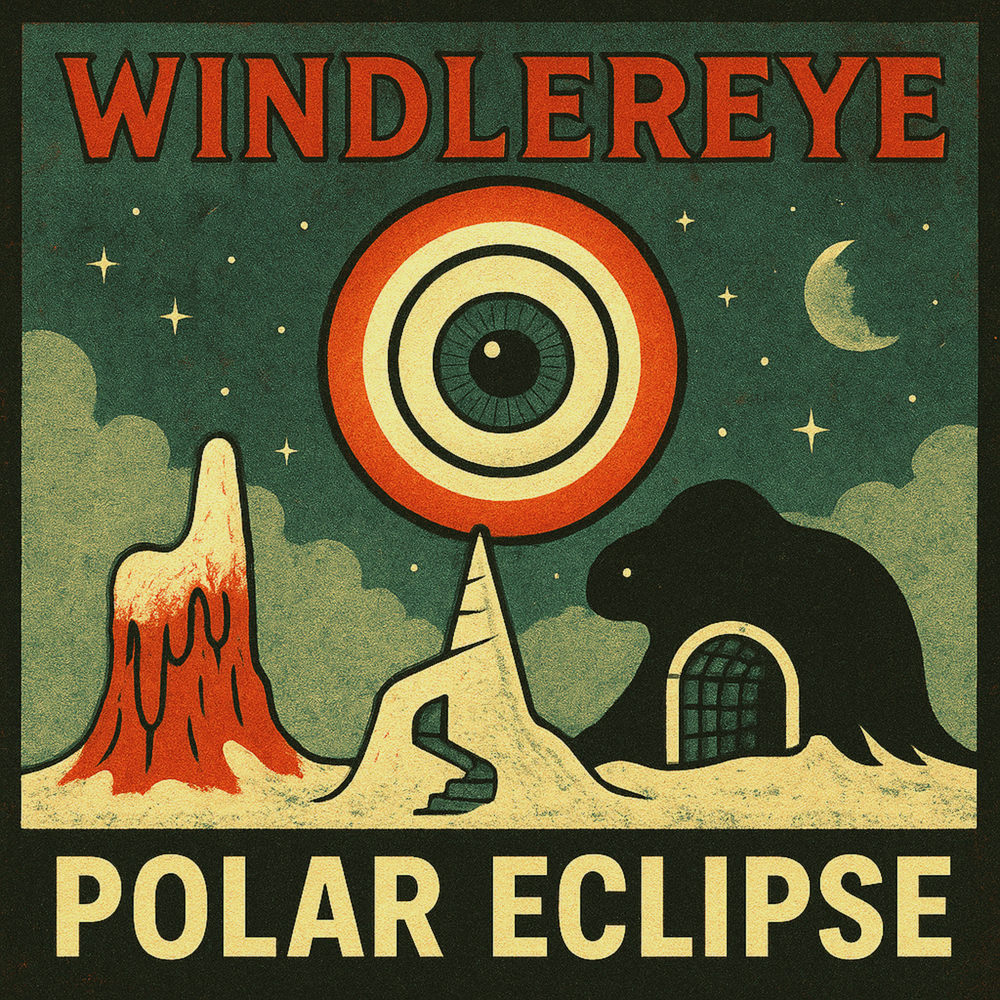

[Verse 1]
You text brief
Like every word costs
Asked if I was "doing okay"
I said "yeah"
That message didn't really arrive
It was no words, it was a cry
[Chorus]
There's a pull I don't name
I don't fight it
I don't brag
I don't chase
I stand where you left me
Half-turned
Half-late
And I am calling that...
Attraction or repulsion
And I think that is...
Magnet magic
[Verse 2]
Now you text long
It seems you're pissed off
You say you aren't "doing okay"
I said "yeah I know"
And that message didn't really land
That was not my plan
[Bridge]
You laughed when I didn't
I was about to laugh, you could not
I held it in
I held back...
You said we're complete
Clear and concrete
[Chorus]
There's a pull I don't name
I don't fight it
I don't brag
I don't chase
I stand where you left me
Half-turned
Half-late
And I am calling that...
Attraction or repulsion
And I think that is...
Magnet magic
[Interlude]
Now the friendship arc is complete
You smiled when you said it
[Chorus]
There's a pull I don't name
I don't fight it
I don't brag
I don't chase
I stand where you left me
Half-turned
Half-late
And I am calling that...
Attraction or repulsion
And I think that is...
Magnet magic
[Verse 1]
I woke up in a pit of gargling chewing gum
Rubber chickens flapped above my thumbs
Eating a mayonnaise ketchup sandwich
My socks melted, but only on one side
[Pre-Chorus]
Drinking dry from a jar of...
[Chorus]
Quicksand!
Swallow me whole
I wanna see the earth from below
Quicksand!
Colors dripping from the soul
I am drowning but I am still in control
[Verse 2]
Juggling clocks spun on cactus spines
Gravity blinked, and I twirled right in time
Turned upside down
Or the other way around
Or the third way around
Or the other round about!
[Chorus]
Quicksand!
Swallow me whole
I wanna see the earth from below
Quicksand!
Colors dripping from the soul
I am drowning but I am still in control
[Bridge]
Maybe I am a personality trait
A husk (a husk), an evil (traitor)
Theatrically plotting escape
While the rubber chickens flail their legs and SCREAM!
[Chorus]
Quicksand!
Swallow me whole
I wanna see the earth from below
Quicksand!
Colors dripping from the soul
I am drowning but I am still in control
[Intro]
Like
No yeah
I mean
You know
[Verse 1]
Like literally I was just saying
Not even saying saying
Just like
You know
That thing where you start a sentence
And it kind of keeps going
[Verse 2]
I mean dude
It's not that deep
It's just
You know what I'm saying
I feel like you know
You totally know
[Chorus]
Like, literally
You know what I mean
Like, literally
That's what I mean
I waited six seven hours for him
Which is fine
I guess
[Verse 3]
No yeah for sure
Exactly
That's what I was thinking too
I didn't finish the thought
But it finished itself
[Pre-Chorus]
I was gonna text
But then I didn't
Which is basically texting
(EEEEEH)
(IN YOUR HEAD)
[Chorus]
Like, literally
You get it
Like, literally
You're getting it
I waited six seven hours for him
It wasn't weird
Until it was
[Bridge]
(dude)
(no yeah)
(ooh ooh)
(nahhhh)
(that's crazy)
(nahhhh)
(oh no)
[Verse 4]
I'm not mad
I'm just saying
Which is something people say
When they're saying nothing
[Chorus]
Like, literally
I'm just talking (ehh?)
Like, literally
Words are happen (ing)
I waited six seven hours for him
Anyway
[Outro]
So yeah
That's what I meant
You know
Literally
[Verse 1]
I took the stairs two at a time
Skipped the landing, missed the sign
The wall was marked where hands had been
Not prayers, just balance
Thus I leaned in
I held the door for someone late
They didn't look back, they accelerated
I stood there counting seconds wrong
Learning speed depends on...
Where you're standing from
[Chorus]
It's a unique perspective
When you don't get the frame
I was certain of angles
Still missing the shape
Call it insight or call it neglect
Either way
I am not defective
It's just a unique perspective
[Verse 2]
I kept my voice at a usable size
So it wouldn't bend the room
I've seen words bruise faster than hands
If they land at the wrong altitude
The floor plan changed without a sound
Furniture moved when I wasn't around
Every object knew its role
Except me
Thus I learned control
[Chorus]
It's a unique perspective
When you don't get the frame
I was certain of angles
Still missing the shape
Call it insight or call it neglect
Either way
I am not defective
It's just a unique perspective
[Bridge]
I don't distrust the view
I distrust the distance
I don't question the facts
I question the entrance
Every window argues with the street
Every answer depends on where you sit
(hold that thought)
(no, really)
Hold it
[Chorus]
It's a unique perspective
When you don't get the frame
I was certain of angles
Still missing the shape
Call it insight or call it neglect
Either way
I am not defective
It's just a unique perspective
[Verse 3]
Someone else will take these steps
Two at a time
Miss the sign
Lean where the wall remembers hands
And think the mark was left on purpose
...
I won't correct them
[Verse 1]
I stood too close to the doorway
You held it open too long
Something moved between us
Nothing you could point on
Your eyes said stay awake
Your brain said don't you dare
I felt it on me, the ache
Now we're just floating in the same air
[Pre-Chorus]
You didn't say it out loud
Still I heard what you meant
I took a breath I shouldn't
Now I'm carrying it
[Chorus]
It's contagious!
I pass it when I talk
You catch it when you watch
It's contagious!
You don't need to touch me
You don't need to know my name
It's contagious!
We're already the same
[Verse 2]
You laughed and laughed and checked your phone
I watched your gestures change
Maniacal fiddling, go back home
Oh, how strange...
We shared ideas by accident
Held them a second too long
You wiped your face like nothing's wrong
BUT YOUR INNOCENCE IS GONE!
[Pre-Chorus]
You said you're doing ok
I've heard that line before
Say it twice to be sure...
Let's call it off for a day...
[Chorus]
It's contagious!
I pass it when I talk
You catch it when you watch
It's contagious!
You don't need to touch me
You don't need to know my name
It's contagious!
We're already the same
[Bridge]
It travels quiet
Between the words you choose
It waits polite
For a second lapse...
It sticks to all...
Like June Collapse
[Chorus]
It's contagious!
I pass it when I talk
You catch it when you watch
It's contagious!
You don't need to touch me
You don't need to know my name
It's contagious!
[Outro]
We're already the same
[Verse 1]
There's a piano on the moon
Always stuck with the same tune
No bench, no hands, no one in sight
The lid is cracked but shining bright
Each key remembers its sequence and time
I watch it from the telescope
It's always there, always alone
I cannot hear but I can see
The notes are drowned in ecstasy
[Chorus]
Play it wrong
Play it late
Leave the silence where it breaks
If I learn one thing too soon
It's how to look up to the moon
Play it once
Let it drift
Every song forgets the gift
There's a piano on the moon
Still playing even when I move
[Verse 2]
I carried years like folded coats
Never wore them, but they piled up
Mild at first, styled enough
An onion covers the whole gap
[Bridge]
No one taught it how to end
No last chord to recommend
It keeps time without a claim
No one there to take the blame
[Chorus]
Play it wrong
Play it late
Leave the silence where it breaks
If I learn one thing too soon
It's how to look up to the moon
Play it once
Let it drift
Every song forgets the gift
There's a piano on the moon
Still playing even when I move
[Verse 1]
The radiator runs a flat note in the hall
Check every grease stain on the north-side wall
The ink dissolved from the sweat of my palms...
And yet here... I stand.
[Chorus]
It's the long way still!
Clip the wire, pay the bill.
It's the long way still!
If the fever doesn't kill
Then the waiting surely will.
[Verse 2]
I put my boots in the oven just to see the leather shrink
There's a chemical flavor in the water from the sink
The neighbors talk through the ventilation slit
About the price of the copper and the weight of the split.
[Bridge]
Seven miles of green carpet and it's all the same grey
I've been walking in circles since the middle of May
The exit sign blinks like a nervous eye
I'd ask for directions but I'm too proud to lie
It's... me... a ghost
[Chorus]
It's the long way still!
Clip the wire, pay the bill.
It's the long way still!
If the fever doesn't kill
Then the waiting surely will.
[Breakdown]
(One foot)
(right)
It's stretching away from the light!
[Chorus]
It's the long way still!
Clip the wire, pay the bill.
It's the long way still!
If the fever doesn't kill
Then the waiting surely will.
[Verse 1]
I don't need a reason
I already know
You don't keep it this close
Unless you want it to show
I'm not waiting for damage
I'm not counting the gross
I just need to feel pressure
Without changing the dose
[Pre-Chorus]
You call it a warning
I call it a line
[Chorus]
Kerosene
I don't light it
I let it breathe inside of me
And I don't run
Away from the blowgun
The day gets done
And I am not
I say it clean
I don't need it burning
I need it seen
Kerosene
[Verse 2]
Every room changes shape
When I walk in slow
People talk in their ways
Before they even go
I learned it early,
What distance can do
If you never stand nearby
It keeps standing over you
[Pre-Chorus]
I'm not reckless
I'm just exact
[Chorus]
Kerosene
I don't light it
I let it breathe inside of me
And I don't run
Away from the blowgun
The day gets done
And I am not
I say it clean
I don't need it burning
I need it seen
Kerosene
[Bridge]
They want me safe
They want me small
They want the risk to mean nothing at all
But I trust my hands
I trust my stance
[Chorus]
Kerosene
I don't light it
I let it breathe inside of me
And I don't run
Away from the blowgun
The day gets done
And I am not
I say it clean
I don't need it burning
I need it seen
Kerosene
[Outro]
Kerosene
[Chorus]
This page is intentionally left blank
I read it
I read it again
Still nothing answered
[Chorus]
This page is intentionally left blank
I left it
I left it clean
It's waiting...
[Chorus]
This page is intentionally left blank
I signed it
I signed it below
I call that progress